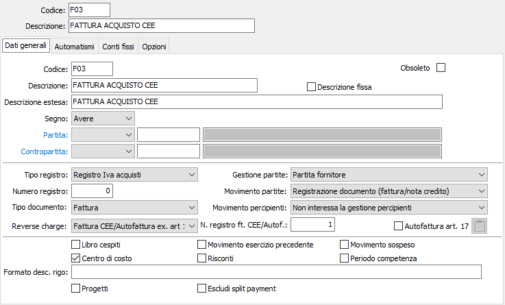
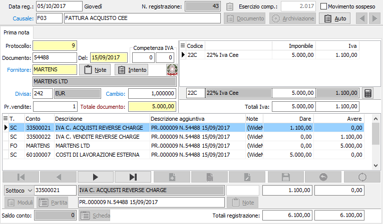
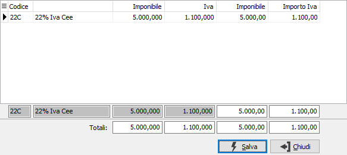
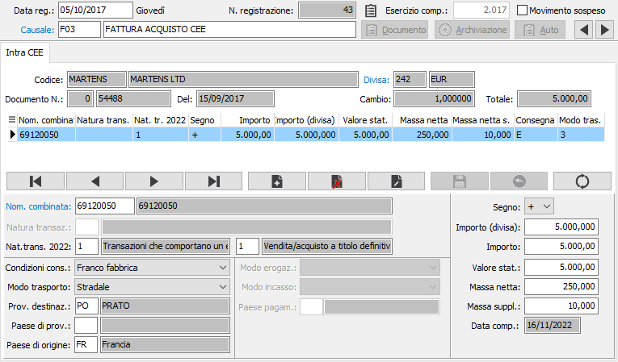
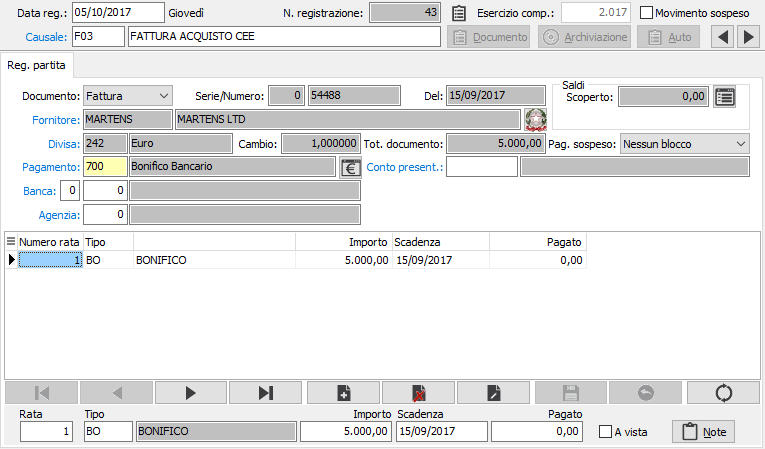

Registrazione acquisti intracomunitari
Registrazione di Fattura
Premesso che la registrazione contabile di una fattura di acquisto intracomunitaria non ha nulla a che vedere con i cosiddetti Modelli Intra 1 e Intra 2 (che vengono trattati nell'apposito capitolo), occorre ricordare che alle fatture di acquisto intracomunitarie deve essere assegnata una propria numerazione di protocollo, diversa da quella di tutte le altre fatture. Ne deriverebbe la necessità di disporre di un apposito registro Iva acquisiti intracomunitari; OS1 ha tuttavia la possibilità sia di produrre un apposito registro acquisti distinguibile da un'apposita serie sezionale, sia di stampare le fatture di acquisto intracomunitarie, ancorchè con la propria numerazione, in coda al registro acquisti normale.

Queste fatture di acquisto intracomunitarie, a cui viene fittiziamente aggiunta l'Iva acquisti secondo l'aliquota relativa alla tipologia dei prodotti acquistati, devono anche essere stampate sul registro Iva vendite con l'aggiunta, sempre fittizia, di un'Iva vendite che consenta il conguaglio con la relativa Iva acquisti, al fine di impedire la detrazione di un'Iva non pagata. Anche per quanto riguarda l'Iva vendite, è possibile scegliere di assegnare le fatture ad un apposito registro Iva vendite, con distinta numerazione, oppure al normale registro Iva vendite. Non si confonda questo trattamento particolare che vale solo per le fatture di acquisto intracomunitarie: le vere fatture di vendita a clienti intracomunitari seguono la numerazione normale e non hanno nulla a che vedere con queste note.
Le serie di registro Iva acquisti e di registro Iva vendite che verranno utilizzate dal programma sono indicate nella causale contabile di registrazione fatture di acquisto intracomunitarie.
Per registrare una fattura di acquisto intracomunitaria, occorre utilizzare una causale analoga a quella illustrata di seguito. Nelle immagini è illustrata una causale che utilizza il registro acquisti Iva della serie sezionale 1; tale causale prevede inoltre l'uso di un apposito sezionale Iva (serie 1) per la stampa delle corrispondenti registrazioni Iva vendite. La causale attiva le partite aperte. Gli utenti che non intendono utilizzare le partite aperte, indicheranno nell'apposito campo il valore non interessa la gestione partite.
Se non vengono gestite le partite aperte, la registrazione prevede la finestra video Prima nota (Iva + contabilità); in caso contrario, è prevista anche la finestra video Registrazione partita.
Finestra video Prima nota sezioni Iva + Contabilità
L'esempio prevede un acquisto dalla Gran Bretagna, con fattura in sterline e cambio variabile rispetto all'Euro.

La sezione video Iva è simile a quella già nota per le fatture di acquisto; il totale fattura viene indicato al netto dell'Iva; dopo aver indicato il codice Iva (si preferisca un codice Iva appositamente creato per gli acquisti intracomunitari), viene indicato l'imponibile (in questo caso corrispondente al totale fattura) in divisa estera (sterline); il programma calcola l'Iva intracomunitaria corrispondente. Qualora si intenda visualizzare anche gli importi in moneta di conto è necessario cliccare sul bottone comparirà la seguente finestra.

Nella sezione video contabilità, viene presentato l'avere del fornitore in divisa di conto, ovviamente al netto di Iva. Vengono direttamente presentati i sottoconti Iva acquisti e Iva vendite, anch'essi con i controvalori calcolati in divisa di conto, e il cursore si posiziona sul rigo per l'indicazione del sottoconto di costo, presentando già il controvalore in divisa di conto. Se l'anagrafica del fornitore contiene già il codice della contropartita abituale, anche questo rigo si presenta completo. È naturalmente possibile modificarne l'importo e aggiungere ulteriori righi all'articolo contabile proposto.
Benché non vengano qui richiamate, valgono tutte le funzioni relative alle sezioni Iva vendite e acquisti dettagliatamente illustrate nel paragrafo relativo alla registrazione delle fatture di acquisto.
Dopo l'inserimento della sezione IVA, se attivo il modello INTRASTAT compare la seguente finestra.

In questa sezione vengono indicati i dati relativi alla compilazione del modello INTRA.
Finestra video Registrazione partita

La sezione Partita fornitore della registrazione di una fattura di acquisto intracomunitaria è assolutamente identica a quella della fattura di acquisto extracomunitaria in valuta già ampiamente descritta.
Le scadenze vengono calcolate nella divisa del documento (in questo caso, sterline) e gli importi non comprendono ovviamente l'Iva che non costituisce debito verso il fornitore estero.
Registrazione di Nota di credito
La registrazione di una nota di credito su acquisti intracomunitari segue la normativa delle corrispondenti fatture di acquisto, ovvero: assume la stessa numerazione di protocollo delle fatture di acquisto Intra; viene maggiorata dell'Iva acquisiti teorica e viene calcolata l'Iva vendite teorica. Viene stampata sia sul registro Iva acquisti Intra che sul registro Iva vendite.
Utilizza una causale contabile simile a quella illustrata di seguito.
Per la registrazione si seguono le modalità già illustrate per la corrispondente registrazione di fattura di acquisto Intra in cui, pur impostando un totale documento al netto di Iva, la stessa viene calcolata e aggiunta sia come Iva acquisti che come Iva vendite.
Per la finestra video Registrazione partita, se attivata, valgono le considerazioni già illustrate: all'atto della conferma del movimento, il programma effettua un controllo sulla tabella scadenze per il fornitore attivo, e se individua l'esistenza di partite aperte visualizza il messaggio relativo all'eventuale conferma di assegnazione della nota di credito ad una partita esistente.